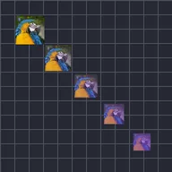

लीनियर रिपीट

लेयर की कई कॉपियाँ अपने आप बनाता है, जो एक लाइन में व्यवस्थित होती हैं।
सेटिंग्स
| सेटिंग | प्रकार | रेंज | डिफ़ॉल्ट |
|---|---|---|---|
| काउंट | संख्या | 0 से 150 | 5 |
| पोज़िशन | पॉइंट (X, Y) | -99999 से 99999 | 500, 0 |
| रेंज पोज़िशन | पॉइंट (X, Y) | -99999 से 99999 | 0, 0 |
| रेंज स्केल | संख्या | 0 से 10 | 1 |
| रेंज रोटेशन | एंगल | -3600° से 3600° | 0° |
| रेंज ओपेसिटी | संख्या | 0% से 100% | 100% |
| फ़िल कलर | कलर | – | #FFFFFF |
| फ़िल अमाउंट | संख्या | 0% से 100% | 0% |
| रेंज स्टार्ट | संख्या | 0% से 100% | 0% |
| रेंज एंड | संख्या | 0% से 100% | 100% |
| रेंज ऑफ़सेट | संख्या | -1000% से 1000% | 0% |
| ईज़िंग | विकल्प | लीनियर, ईज़ इन, ईज़ आउट, ईज़ इन आउट | लीनियर |
| रैंडम ऑर्डर | चालू या बंद | – | बंद |
| सीड | संख्या | 0 से 9999 | 0 |